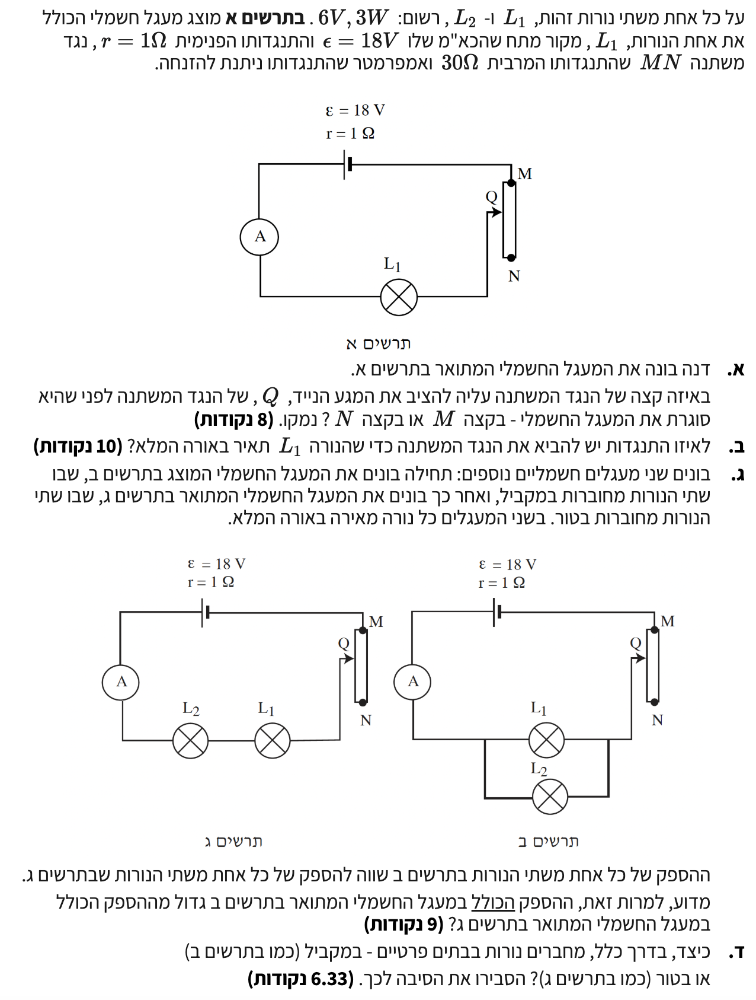

פתרון בגרות בפיזיקה - חשמל 2008
שאלה 2: מעגלי זרם ישר, נגדים משתנים ונורות
פתרון מונחה, מפורט ופדגוגי ברמת 5 יחידות לימוד
עודכן:
--- --:--:--
מבט כללי על השאלה
בשאלה זו אנו חוקרים מעגלי זרם ישר המשלבים נורות להט ונגד משתנה (ריאוסטט). נראה כיצד מיקום המגע הנייד משפיע על התנגדות המעגל ועל זרם העבודה, ונשווה את נצילות המעגלים והספקי המקורות בין חיבור טורי למקבילי. בסוף נקיש מכך על אופן החיבור הנכון ברשת החשמל הביתית.
נתונים כלליים לשאלה:
- שתי נורות זהות, $L_1$ ו-$L_2$, שעליהן רשום: 6V, 3W.
- מקור מתח בעל כא"מ $\varepsilon = 18\text{V}$ והתנגדות פנימית $r = 1\Omega$.
- נגד משתנה $MN$ שהתנגדותו המרבית היא $R_{MN} = 30\Omega$.
- אמפרמטר שהתנגדותו ניתנת להזנחה ($R_A \approx 0$).

[תמונת השאלה המקורית]
לא נמצאה תמונה בשם question-image.png באותה תיקייה.
מה נתון: מעגל טורי הכולל מקור מתח בעל התנגדות פנימית $r$, אמפרמטר, נורה $L_1$ ונגד משתנה $MN$ שהתנגדותו המרבית היא $R_{MN} = 30\Omega$. המגע הנייד $Q$ יכול לנוע בין $M$ (התנגדות חיצונית פעילה 0) ל-$N$ (התנגדות חיצונית פעילה מקסימלית).
מה מחפשים: לקבוע היכן להציב את המגע הנייד $Q$ בדיוק לפני סגירת המעגל, כדי להגן על רכיבי המעגל מפני זרם חשמלי חזק מדי.
נוסחאות מהדף:
\( V_{ab} = \varepsilon - rI \)
\( V = RI \)
פתרון צעד-אחר-צעד:
תחילה, נפתח ביטוי לזרם הראשי במעגל מתוך נוסחאות הדף. מתח ההדקים של המקור $V_{ab}$ שווה למתח הנופל על המעגל החיצוני שבו התנגדות חיצונית שקולה $R_{\text{ext}}$ (לפי חוק אוהם: $V = I R_{\text{ext}}$). נשווה ביניהם:
\[ I R_{\text{ext}} = \varepsilon - rI \implies I(R_{\text{ext}} + r) = \varepsilon \implies I = \frac{\varepsilon}{R_{\text{ext}} + r} \]
כאשר ההתנגדות הכוללת של המעגל כולו מוגדרת כסכום ההתנגדות החיצונית והפנימית: \(R_{\text{total}} = R_{\text{ext}} + r\).
על פי עקרונות הבטיחות בחשמל, ברגע סגירת מעגל אנו מעוניינים שעוצמת הזרם תהיה המינימלית האפשרית. מתוך הביטוי שפיתחנו, עוצמת הזרם $I$ נמצאת ביחס הפוך להתנגדות הכוללת $R_{\text{total}}$. מכיוון שההתנגדות הפנימית $r$ קבועה, כדי להקטין את הזרם למינימום עלינו לדאוג שההתנגדות החיצונית $R_{\text{ext}}$ תהיה הגדולה ביותר האפשרית ברגע ההפעלה.
כאשר עוקבים אחרי המסלול בשרטוט, רואים כי הזרם יוצא מההדק החיובי של המקור, עובר דרך הנורה $L_1$, ומשם ממשיך ונכנס לנגד המשתנה בנקודה (המגע הנייד) $Q$. משם הזרם ממשיך לזרום בתוך גוף הנגד עד לנקודה $M$, ומנקודה $M$ הוא חוזר (דרך האמפרמטר) להדק השלילי. לכן, אורך הנגד המשתתף במעגל הוא המרחק שבין $Q$ ל-$M$.
הוכחה מתמטית וכמותית לסכנת הזרם בקצה M:
נחשב מה יקרה במדויק אם נמקם בטעות את המגע הנייד \(Q\) בקצה \(M\) (מצב שבו התנגדות הנגד המשתנה במעגל היא אפס, \(R_x = 0\)):
-
התנגדות הנורה (מחושבת בסעיף ב'): היא \(R_{L1} = 12\Omega\). זרם העבודה התקין והמומלץ על ידי היצרן עבור הנורה הוא \(I_{\text{rated}} = 0.5\text{A}\).
-
התנגדות המעגל החיצוני במצב זה: היא התנגדות הנורה בלבד, כלומר \(R_{\text{ext}} = R_{L1} = 12\Omega\).
-
חישוב עוצמת הזרם בפועל במעגל:
\[ I_{\text{actual}} = \frac{\varepsilon}{R_{\text{ext}} + r} = \frac{18}{12 + 1} = \frac{18}{13} \approx 1.385\text{A} \]
-
יחס הזרמים: נחלק את הזרם שיווצר בפועל בזרם המקסימלי המותר לנורה:
\[ \frac{I_{\text{actual}}}{I_{\text{rated}}} = \frac{1.385\text{A}}{0.5\text{A}} \approx 2.77 \]
אנו רואים שהזרם במעגל יהיה גדול פי כ-2.8 (כמעט פי 3!) מזרם העבודה המרבי המותר.
-
חישוב ההספק שיתפתח בפועל בנורה: לפי הנוסחה \(P = I^2 R\):
\[ P_{\text{actual}} = I_{\text{actual}}^2 \cdot R_{L1} = (1.385)^2 \cdot 12 \approx 1.918 \cdot 12 \approx 23\text{W} \]
הנורה תאלץ לספוג הספק של כ-\(23\text{W}\) – ערך הגדול פי כמעט 8 מההספק המרבי שהיא מתוכננת לעבוד בו (\(3\text{W}\))!
עומס כה עצום של אנרגיה חשמלית יתורגם מיד לחום קיצוני בחוט הלהט של הנורה, דבר שיביא להתכה מיידית ושריפה ודאית שלו תוך שבריר שנייה מרגע סגירת המפסק.
מסקנה: יש להציב את המגע הנייד $Q$ בקצה $N$ לפני סגירת המעגל, שכן הצבתו בקצה $M$ תגרום לזרם הגדול פי כ-2.8 מהזרם המותר, ולהספק הגדול פי כ-8 מההספק המקסימלי, דבר שישרוף את הנורה באופן מיידי.
טיפ מורה:
זכרו כלל אצבע חשוב למעבדה: לעולם אין לחבר מקור מתח למעגל עם נגד משתנה כאשר הנגד מכוון למינימום התנגדות! פעולה זו שקולה ליצירת קצר כמעט מלא, והיא הגורם מספר אחת לשריפת נתיכים (פיוזים) במדדי הזרם של בית הספר.
מה נתון:
כא"מ: $\varepsilon = 18\text{V}$, התנגדות פנימית: $r = 1\Omega$. על הנורה רשום: $V_L = 6\text{V}$, $P_L = 3\text{W}$.
מה מחפשים:
למצוא את התנגדות הנגד המשתנה $R_x$ שתגרום לנורה לעבוד בדיוק בתנאים הנומינליים (הארה מלאה).
נוסחאות מהדף:
\( P = V_{AB}I \)
\( V = RI \)
\( V_{ab} = \varepsilon - rI \)
חישוב:
שלב 1: מציאת זרם העבודה והתנגדות הנורה
נשתמש בנוסחת ההספק כדי למצוא את הזרם הנדרש לנורה (שהוא הזרם במעגל כולו מכיוון שזהו חיבור טורי):
\[ 3 = 6 \cdot I \implies I = 0.5\text{A} \]
כעת נחשב את התנגדות הנורה הקבועה בעזרת חוק אוהם:
\[ 6 = R_L \cdot 0.5 \implies R_L = 12\Omega \]
שלב 2: מציאת התנגדות הנגד המשתנה
נחשב את מתח ההדקים שמספק המקור למעגל החיצוני:
\[ V_{\text{source}} = 18 - 1 \cdot 0.5 = 17.5\text{V} \]
לפי חוק שימור האנרגיה במסלול, סכום מפילי המתח על הרכיבים החיצוניים בטור שווה למתח ההדקים. כלומר, המתח מתחלק בין הנורה לנגד המשתנה. נחשב את המתח שנופל על הנגד המשתנה:
\[ V_x = 17.5\text{V} - 6\text{V} = 11.5\text{V} \]
לבסוף, נשתמש שוב בחוק אוהם עבור הנגד המשתנה כדי למצוא את התנגדותו $R_x$:
\[ R_x = \frac{V_x}{I} = \frac{11.5}{0.5} = 23\Omega \]
מסקנה: יש לכוון את הנגד המשתנה להתנגדות של $R_x = 23\Omega$.
טיפ מורה:
שימו לב להקפדה להשתמש רק בנוסחאות בסיס מתוך הדף! במקום להציב את כל הערכים לנוסחה אחת גדולה ומורכבת, פירקנו את הבעיה לשלבים: מציאת זרם, חישוב מתח הדקים, מציאת המתח החסר על הנגד ולבסוף מציאת ההתנגדות. שיטה זו מקטינה דרמטית טעויות אלגבריות במבחן.
מה נתון: תרשים ב' (שתי נורות במקביל) ותרשים ג' (שתי נורות בטור). כל נורה מאירה באור מלא (צורכת $3\text{W}$).
מה מחפשים: מדוע ההספק הכולל שמייצר המקור בתרשים ב' גדול מההספק הכולל בתרשים ג'?
נוסחאות מהדף:
\( P = V_{AB}I \)
\( \Sigma I = 0 \)
פתרון צעד-אחר-צעד:
הספק המקור נובע מהאנרגיה הכוללת שהוא משקיע במעגל, הניתנת על ידי הכא"מ ($\varepsilon$). מתוך נוסחת ההספק בדף, נוכל לומר שהספק המקור הכולל הוא $P_{\text{total}} = \varepsilon \cdot I_{\text{total}}$. מכיוון שהכא"מ $\varepsilon = 18\text{V}$ קבוע בשני המעגלים, ההספק הכולל תלוי אך ורק בעוצמת הזרם הראשי במעגל.
תרשים ב' (מקבילי): הנורות צורכות כל אחת זרם עבודה נומינלי של $0.5\text{A}$. על פי חוק הצמתים של קירכהוף (חוק שימור המטען, $\Sigma I = 0$), הזרם הראשי הנכנס לצומת שווה לסכום הזרמים היוצאים אל הענפים המקבילים. לכן הזרם הראשי הוא:
\[ I_{\text{total, ב}} = 0.5\text{A} + 0.5\text{A} = 1.0\text{A} \]
תרשים ג' (טורי): הנורות מחוברות בטור, כך שישנו רק מסלול זרימה יחיד ולכן זרימת המטען רציפה וזהה לאורך כל המעגל. מאחר שכל נורה מאירה באור מלא, הזרם הראשי במעגל חייב להיות זהה לזרם העבודה של נורה אחת:
\[ I_{\text{total, ג}} = 0.5\text{A} \]
נחשב את ההספק הכולל:
\[ P_{\text{total, ב}} = 18\text{V} \cdot 1.0\text{A} = 18\text{W} \]
\[ P_{\text{total, ג}} = 18\text{V} \cdot 0.5\text{A} = 9\text{W} \]
מסקנה: בחיבור מקבילי הזרם הראשי מהמקור גבוה פי שניים מאשר בחיבור טורי. לכן ההספק הכולל שמפיק מקור המתח בתרשים ב' גדול יותר.
טיפ מורה:
בשני המעגלים ההספק שמומר לאור (הספק מועיל) זהה ושווה ל-$6\text{W}$ יחד. הפער בהספקים הכוללים מוכיח כי מעגל ב' מבזבז הרבה יותר אנרגיה כחום על הנגד המשתנה ועל התנגדות הסוללה. כלומר, הנצילות של המעגל הטורי כאן טובה בהרבה!
מה נתון: רשת החשמל הביתית מיועדת להפעלת מספר רב של מכשירים ונורות באופן בטוח ותקין.
מה מחפשים: לקבוע האם רשת החשמל הביתית מחוברת בטור או במקביל, ולנמק באמצעות העקרונות הפיזיקליים של מעגלים.
נוסחאות מהדף:
\( \Sigma\varepsilon = \Sigma IR \)
\( \Sigma I = 0 \)
פתרון צעד-אחר-צעד:
בבתים פרטיים ובכל המבנים המודרניים, מחברים את כל השקעים והמכשירים בחיבור מקבילי בלבד. העקרונות הפיזיקליים המחייבים זאת הם:
-
עצמאות תפעולית: בחיבור מקבילי, כל מכשיר מהווה ענף נפרד מול מקור המתח. לפי חוק הצמתים לזרמים ($\Sigma I = 0$), ניתוק זרימת המטען בענף אחד (למשל, כאשר מכבים נורה או כשמכשיר נשרף) אינו משפיע על זרימת המטען בענפים המקבילים לו, ולכן שאר הבית ימשיך לפעול כרגיל. בחיבור טורי קיים רק מסלול אחד למטען, ונתק בנקודה אחת מאפס את הזרם בכל הבית כולו.
-
מתח עבודה מלא וקבוע: כל מכשיר מיועד הנדסית לעבוד תחת מתח מסוים ואחיד (בישראל 230V). על סמך חוקי קירכהוף למסלול סגור ($\Sigma\varepsilon = \Sigma IR$), מתח המקור נופל במלואו באופן זהה על כל ענף מקבילי. לכן כל מכשיר שיחובר במקביל "יראה" בדיוק 230V. אילו היינו מחברים את המכשירים בטור, המתח היה מתחלק ביניהם, וככל שהיינו מפעילים יותר מכשירים המתח שנופל על כל אחד היה קטן והם לא היו יכולים לפעול.
מסקנה: רשת החשמל הביתית בנויה בחיבור מקבילי על מנת לאפשר אי-תלות בפעולת המכשירים, וכדי להבטיח שכל מכשיר יקבל את מלוא מתח העבודה הקבוע של הרשת.
טיפ מורה:
בסעיף הקודם גילינו שחיבור טורי יעיל יותר אנרגטית ומבזבז פחות הספק לעומת החיבור המקבילי. עם זאת, רשת החשמל הביתית מלמדת אותנו שיעור חשוב בתכנון מערכות: אנו מוכנים "לשלם" את המחיר האנרגטי הזה בשמחה, כדי להרוויח את היתרונות העצומים של עצמאות תפעולית לכל צרכן ומתח עבודה יציב. זוהי פשרה מחושבת וחיונית שבלעדיה לא היינו יכולים לנהל שגרת חיים נוחה! בנוסף, מכיוון שחיבור צרכנים רבים במקביל מקטין את ההתנגדות השקולה של הבית ומגדיל את הזרם הראשי הנמשך מארון החשמל, חובה להתקין "פקק" (מפסק חצי-אוטומטי) שיקפוץ ויגן עלינו במקרה של עומס יתר מסוכן.